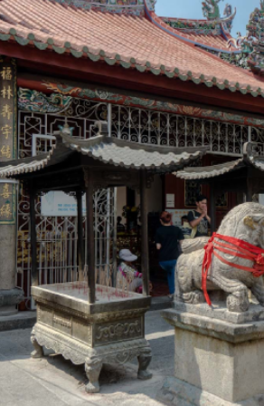
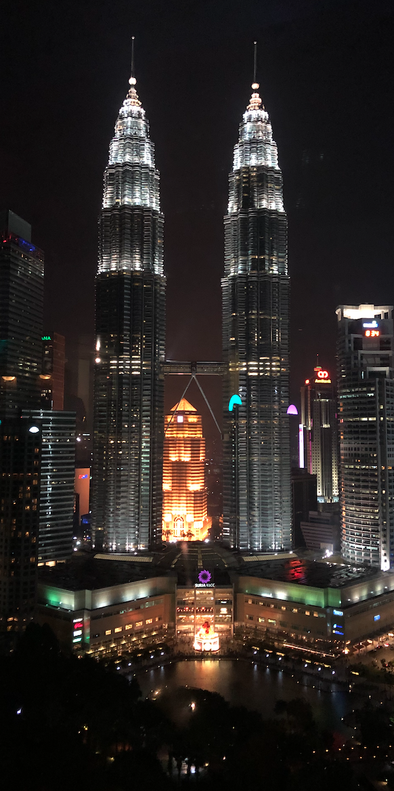

Select Tours and Experiences
Kuala Lumpur Ghost Walk
Kuala Lumpur is a vibrant city with great music, amazing foods and best of all - haunted landmarks
5 stops
3 hours
MYR 10.00

Chinese Heritage Walk
Explore exhibits and places chronicling the history of Chinese immigrants in this part of Peninsular Malaysia.
6 stops
5 hours
MYR 20.00

Landmarks Tour
Explore the famous landmarks of Kuala Lumpur which also includes visits to stores with local delicacies
4 stops
6 hours
FREE